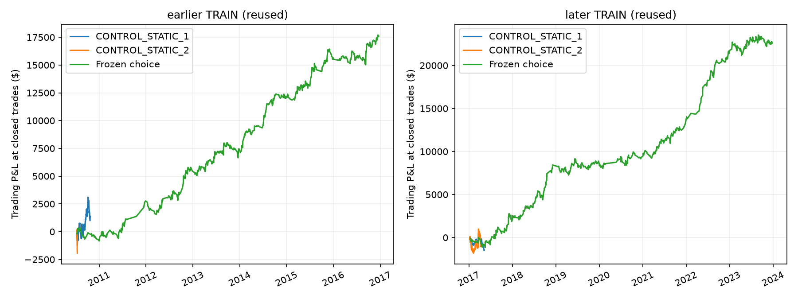
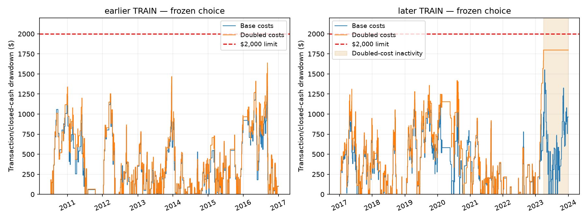

Frozen candidate rejected: positive net and realized drawdown below $2,000 in both TRAIN blocks and at both cost levels, but later doubled-cost activity stalled for276days (limit180). No replacement chosen. Saved as v1.2.0-trade-budget-diagnostic. Intrabar drawdown and funded payout compliance remain unknown.
504 predeclared allocations plus2 matched controls; TRAIN-only ranking and20 whole-grid synthetic null diagnostics. One choice frozen before later TRAIN. Validation/test/forward-paper outcomes excluded; no deployment.
Realized cash drawdown only. Intratrade marked equity is unknown for additional sleeves; this is NOT a verified sub-$2,000 intrabar funded strategy. No withdrawals modeled: these profits cannot be compared to prior payout totals. Both TRAIN blocks have been used before.
| Period | Policy | Costs | Net_PnL | Realized_cash_DD | Trades | Positive_years | Qualified |
|---|---|---|---|---|---|---|---|
| Earlier | CONTROL_STATIC_1 | base | 1,007.65 | 2,087.48 | 129.00 | 1.00 | False |
| Earlier | CONTROL_STATIC_1 | cost2 | 758.46 | 2,012.67 | 128.00 | 1.00 | False |
| Earlier | CONTROL_STATIC_2 | base | -1,937.09 | 2,086.63 | 8.00 | 0.00 | False |
| Earlier | CONTROL_STATIC_2 | cost2 | -1,985.09 | 2,128.63 | 8.00 | 0.00 | False |
| Earlier | CHOICE | base | 17,600.88 | 1,409.71 | 509.00 | 6.00 | True |
| Earlier | CHOICE | cost2 | 16,070.35 | 1,638.21 | 505.00 | 6.00 | True |
| Later reused | CONTROL_STATIC_1 | base | -1,489.65 | 2,011.86 | 147.00 | 0.00 | False |
| Later reused | CONTROL_STATIC_1 | cost2 | -1,790.53 | 2,024.74 | 145.00 | 0.00 | False |
| Later reused | CONTROL_STATIC_2 | base | -1,052.62 | 2,042.06 | 112.00 | 0.00 | False |
| Later reused | CONTROL_STATIC_2 | cost2 | -1,921.98 | 2,024.83 | 33.00 | 0.00 | False |
| Later reused | CHOICE | base | 22,564.09 | 1,551.59 | 579.00 | 7.00 | True |
| Later reused | CHOICE | cost2 | 17,757.18 | 1,797.71 | 482.00 | 5.00 | False |

{
"name": "base_N0_C1_R225_F1",
"book": "base",
"night": false,
"cap": 1.0,
"risk_cap": 225.0,
"fraction": 1.0
}Before each entry, integer quantity is limited by the configured contract multiplier and dollar stop-risk cap, and by a fraction of the remaining $1,800 drawdown budget. Completed prior P&L is the only return information used in allocation. Night positions need $500 accumulated profit. Signal entries/exits, fixed priorities and per-contract economics remain inherited. Exit-bar confirmation delays prevent early reuse of realized P&L. Losses are debited in full, never clipped.
Realized cash drawdown only: missing intratrade OHLC/MAE for extra sleeves. No intrabar funded compliance or payout estimate. Historical percent returns at inherited fixed MNQ27981.5/MES7584 reference levels, not actual historical dollar returns. Source strategies and earlier/later TRAIN repeatedly selected in past; unknown total historical multiplicity. No independent holdout claim.
{
"repeats": 20,
"whole_grid_cells": 10080,
"cost2_maximum_net_95th_percentile": 194.5574289780327,
"passed": true,
"not_confirmatory": true
}| name | book | night | cap | risk_cap | fraction | qualified | net | cost2_net | drawdown | cost2_drawdown | trades | positive_years | cost2_positive_years | maximum_inactive_days |
|---|---|---|---|---|---|---|---|---|---|---|---|---|---|---|
| base_N0_C1_R225_F1 | base | False | 1.00 | 225.00 | 1.00 | True | 17,600.88 | 16,070.35 | 1,409.71 | 1,638.21 | 509.00 | 6.00 | 6.00 | 76.75 |
| base_N1_C1_R225_F1 | base | True | 1.00 | 225.00 | 1.00 | True | 17,600.88 | 16,070.35 | 1,409.71 | 1,638.21 | 509.00 | 6.00 | 6.00 | 76.75 |
| base_N0_C1_R300_F1 | base | False | 1.00 | 300.00 | 1.00 | True | 17,715.25 | 15,810.70 | 1,777.86 | 1,775.57 | 530.00 | 6.00 | 5.00 | 114.39 |
| base_N1_C1_R300_F1 | base | True | 1.00 | 300.00 | 1.00 | True | 17,715.25 | 15,810.70 | 1,777.86 | 1,775.57 | 530.00 | 6.00 | 5.00 | 114.39 |
| base_N0_C1_R225_F0.5 | base | False | 1.00 | 225.00 | 0.50 | True | 17,317.11 | 15,538.57 | 1,409.71 | 1,638.21 | 509.00 | 6.00 | 6.00 | 76.75 |
| base_N1_C1_R225_F0.5 | base | True | 1.00 | 225.00 | 0.50 | True | 17,317.11 | 15,538.57 | 1,409.71 | 1,638.21 | 509.00 | 6.00 | 6.00 | 76.75 |
| base_N0_C3_R225_F0.5 | base | False | 3.00 | 225.00 | 0.50 | True | 19,067.24 | 15,007.60 | 1,747.78 | 1,711.81 | 436.00 | 5.00 | 5.00 | 138.33 |
| base_N1_C3_R225_F0.5 | base | True | 3.00 | 225.00 | 0.50 | True | 19,067.24 | 15,007.60 | 1,747.78 | 1,711.81 | 436.00 | 5.00 | 5.00 | 138.33 |
| base_N0_C1_R300_F0.5 | base | False | 1.00 | 300.00 | 0.50 | False | 570.52 | 14,625.27 | 1,750.45 | 1,689.82 | 116.00 | 1.00 | 6.00 | 736.35 |
| base_N1_C1_R300_F0.5 | base | True | 1.00 | 300.00 | 0.50 | False | 570.52 | 14,625.27 | 1,750.45 | 1,689.82 | 116.00 | 1.00 | 6.00 | 736.35 |
| both_N0_C1_R225_F1 | both | False | 1.00 | 225.00 | 1.00 | False | 15,228.99 | 11,485.45 | 1,769.79 | 1,782.05 | 664.00 | 5.00 | 4.00 | 117.36 |
| both_N1_C1_R225_F1 | both | True | 1.00 | 225.00 | 1.00 | False | 15,228.99 | 11,485.45 | 1,769.79 | 1,782.05 | 664.00 | 5.00 | 4.00 | 117.36 |
| base_N0_C2_R225_F1 | base | False | 2.00 | 225.00 | 1.00 | False | 7,421.58 | 6,430.50 | 1,785.51 | 1,769.68 | 241.00 | 3.00 | 3.00 | 1,096.33 |
| base_N1_C2_R225_F1 | base | True | 2.00 | 225.00 | 1.00 | False | 7,421.58 | 6,430.50 | 1,785.51 | 1,769.68 | 241.00 | 3.00 | 3.00 | 1,096.33 |
| base_N0_C3_R225_F1 | base | False | 3.00 | 225.00 | 1.00 | False | 7,682.35 | 6,341.56 | 1,783.86 | 1,790.47 | 240.00 | 3.00 | 3.00 | 1,109.34 |
| base_N1_C3_R225_F1 | base | True | 3.00 | 225.00 | 1.00 | False | 7,682.35 | 6,341.56 | 1,783.86 | 1,790.47 | 240.00 | 3.00 | 3.00 | 1,109.34 |
| base_N0_C2_R225_F0.5 | base | False | 2.00 | 225.00 | 0.50 | False | 17,898.03 | 6,174.71 | 1,747.78 | 1,759.33 | 439.00 | 5.00 | 3.00 | 138.33 |
| base_N1_C2_R225_F0.5 | base | True | 2.00 | 225.00 | 0.50 | False | 17,898.03 | 6,174.71 | 1,747.78 | 1,759.33 | 439.00 | 5.00 | 3.00 | 138.33 |
| base_N0_C3_R150_F0.5 | base | False | 3.00 | 150.00 | 0.50 | False | 280.43 | 4,884.02 | 1,756.12 | 1,643.75 | 138.00 | 2.00 | 5.00 | 736.35 |
| base_N1_C3_R150_F0.5 | base | True | 3.00 | 150.00 | 0.50 | False | 280.43 | 4,884.02 | 1,756.12 | 1,643.75 | 138.00 | 2.00 | 5.00 | 736.35 |
Frozen protocol · All506 rows · Training-history inventory · Skill installation manifest · Full results
{
"passed": true,
"independent_full_earlier_reference_cases": 1012,
"all506_checkpoint_metrics_reconciled": true,
"earlier_execution_signatures": 150,
"nominal_candidate_allocations": 504,
"earlier_qualified_allocations": 8,
"earlier_qualified_distinct_execution_paths": 4,
"chosen_frozen_rank_verified": true,
"all20_null_checkpoint_rows_reconciled": true,
"source_and_cache_hashes_verified": true,
"signature_method": "SHA256 of accepted entry/exit times, multiplier, integer quantity and net cashflows at both costs. Counts distinct earlier realized execution paths, not independent hypotheses.",
"qualifying_realized_metrics_do_not_verify_intrabar_equity": true,
"unverified_intrabar_fields_never_used_as_zero": true,
"rejected_reason": "Doubled-cost later-TRAIN maximum inactivity276.375calendar days exceeds the frozen180day limit.",
"no_alternative_selected_after_later_train": true,
"later_cost2_inactive_days": 276.375,
"maximum_intrabar_drawdown": "UNKNOWN",
"payout_results": "NOT_SIMULATED",
"earlier_and_later_are_reused_train": true,
"validation_accessed": false,
"test_accessed": false,
"forward_paper_accessed": false,
"statistical_evidence": "INSUFFICIENT_FOR_UNSEEN_OR_FUNDED_CLAIM",
"decision": "Save frozen diagnostic; no replacement/deployment."
}
{
"last_completed_cost2_trade": "2023-03-30 15:00:00+00:00",
"final_closed_cash_drawdown": 1797.7060006846514,
"remaining_1800_budget": 2.2939993153486284,
"interpretation": "Budget shrank to about2.29 dollars, too small for a micro contract. Low observed drawdown partly reflects stopping trading. The frozen activity gate correctly rejects it; do not reset the equity peak or relax the gate after seeing this."
}